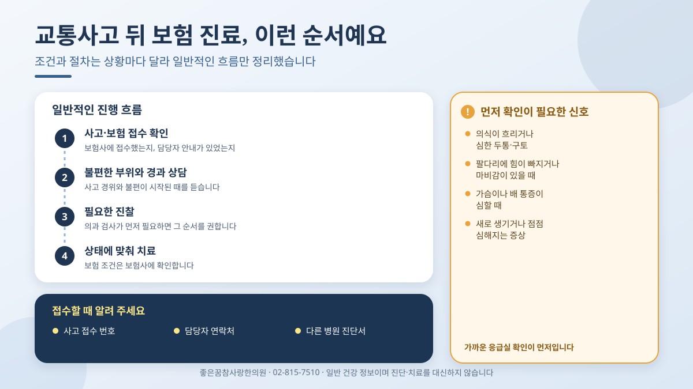

이종호 한의사 감수좋은꿈참사랑한의원 대표원장 (한의사 면허번호 19769)발행 2026-11-22 · 수정 2026-11-26
이 글의 차례
사고 이튿날 아침, 출근 준비를 하다 말고 휴대폰을 다시 엽니다. 어제 보험사에서 온 문자에는 접수 번호와 담당자 이름이 적혀 있습니다. 목은 어제보다 뻣뻣한데, 이 번호를 어디에 써야 하는지부터 막막합니다.
점심시간에 '교통사고 한의원 보험'을 검색해 보지만 읽을수록 머리만 복잡해집니다. 누구는 이렇게 하면 된다 하고, 누구는 그러면 안 된다고 하지요. 그러는 사이 고개를 돌릴 때마다 뒷목이 조금씩 더 당깁니다.
진료실에서 이런 말씀을 자주 듣습니다. 몸도 아픈데 보험 이야기까지 챙기려니 머리가 하얘진다고, 뭘 잘못 말해서 일이 꼬일까 봐 병원 가기를 미뤘다고요. 사고는 몇 초였는데 그 뒤의 일은 숫자와 서류의 말로 길게 이어지니, 그럴 만도 합니다.
먼저 답부터 드리겠습니다. 자동차보험으로 한의원 진료를 받을 때의 접수 방법, 처리 범위, 챙겨야 할 서류는 사고 상황과 보험에 따라 달라서 이 글에서 정해 드릴 수 없습니다.
보험 처리는 보험사 담당자에게 먼저 묻고, 한의원에 오실 때 챙길 것은 방문 전 전화(02-815-7510)로 확인해 주세요. 그렇게 확인하는 동안에도 내가 미리 해 둘 수 있는 일은 분명히 있습니다.
사고 날짜와 경위, 몸의 변화를 적어 두는 일, 다른 병원에서 받은 자료를 모으는 일, 전화로 물을 질문을 정리하는 일이지요. 이 글에는 그 순서와 첫 진료가 어떻게 흘러가는지를 차례로 담았습니다.
다만 의식이 흐리거나, 두통이 점점 심해지거나, 구토가 되풀이되거나, 팔다리에 힘이 빠지거나 저림이 번지거나, 가슴이나 배가 아프거나, 대소변을 가누기 어렵다면 보험 확인보다 가까운 응급실이 먼저입니다. 이 가운데 하나만 있어도, 며칠 지나 새로 생겨도 마찬가지입니다.
왜 사고 직후엔 괜찮다가 며칠 뒤에 뻐근해질까요
사고 당시에는 몸이 긴장해서 통증을 덜 느끼다가, 다음 날이나 며칠 뒤에 목·어깨·허리가 아파 오는 경우가 많습니다. 차에서 내려 사진을 찍고 전화를 돌리는 동안에는 아픈 줄도 모르다가, 긴장이 풀린 뒤에야 몸이 말을 꺼내는 것이지요.
그런데 검사에서는 왜 이상이 없다고 할까요? 엑스레이는 주로 뼈를 보기 때문입니다. 근육과 인대 같은 연부조직이 다친 것은 엑스레이에 잘 보이지 않을 수 있습니다.
그러니 검사는 괜찮다는 말과 그래도 아프다는 말은 서로 부딪히는 말이 아닙니다. 둘 다 그대로 들어야 할 말이지요.
저는 사고 뒤 불편을 '통증'과 '후유증'으로 나누어 설명드립니다. 부딪힌 자리가 멍들고 아픈 것이 통증이라면, 쉬면 나아진 듯하다 다시 아프고 허리를 살피는 사이 어깨와 무릎이 차례로 불편해지는 흐름은 후유증에 가깝습니다.
후유증은 사고가 계기가 되었지만, 사고 전부터 몸에 있던 약한 곳이 함께 흔들리며 생기는 경우가 많습니다. 블록을 여러 개 빼낸 젠가 탑이 하나만 더 빼도 와르르 무너지듯, 오래 써 온 몸은 한 번의 충격이 여기저기로 번지기 쉽습니다.
뼈가 부러진 골절은 충격이 한 자리를 꿰뚫고 지나간 것이라 아픔이 그 자리에 모입니다. 반면 인대와 근육이 다친 염좌는 충격이 몸 안으로 들어왔다가 다 빠져나가지 못한 것과 비슷해, 그 여파가 이곳저곳에서 느껴지기 쉽습니다.
이 흐름은 하루만 봐서는 잘 보이지 않습니다. 사고 직후 괜찮다고 진료를 미루면, 나중에 생긴 불편이 사고와 이어진 것인지 설명하기 어려워질 수 있습니다. 그래서 날짜와 함께 적어 둔 몇 줄이 나중에 힘이 되지요.
사고 뒤부터 첫 진료까지, 일반적인 흐름
사고 뒤 며칠은 몸보다 일이 먼저 몰려옵니다. 차를 맡기고, 보험사와 통화하고, 회사에 사정을 이야기하다 보면 내 몸은 맨 뒤로 밀리지요. 그래서 순서를 한 번 정리해 두시면 덜 헤매실 수 있습니다.
가장 먼저 응급 신호가 없는지 살핍니다. 신호가 있다면 다른 일은 모두 뒤로 미루고 가까운 응급실로 가셔야 합니다. 사고 당일엔 괜찮다가 며칠 뒤 새로 생긴 신호라도 마찬가지예요.
그다음 보험사에 사고가 접수되었는지 확인하고 접수 번호와 담당자 연락처를 적어 둡니다. 한의원 진료를 받으려 할 때 미리 해 둘 일이 있는지도 이때 담당자에게 물어 두세요.
방문 전에는 한의원에 전화해 접수에 필요한 것과 진료 시간을 확인합니다. 오실 때는 사고 요약 메모와 하루 한 줄 기록, 다른 병원에서 받은 자료를 챙겨 오시면 됩니다.
진료실에서는 이야기를 듣고 맥을 짚은 뒤 필요한 진찰을 하고, 의과 검사가 먼저 필요하면 그 순서를 안내해 드립니다. 다만 이 순서는 일반적인 흐름일 뿐입니다.
상대 차량 보험으로 진료받는지, 내 보험으로 받는지, 처리 범위가 어디까지인지는 사고 상황과 보험사 기준에 따라 다릅니다. 이 부분은 담당자에게 꼭 확인해 주세요.
전화하기 전에 적어 둘 질문
전화가 부담스러우시면 물어볼 것을 미리 적어 두고 그대로 읽으셔도 됩니다. 보험사 담당자에게는 이런 것을 여쭤 보세요.
- 제 사고가 접수되어 있나요? 접수 번호와 담당자 연락처를 다시 알려 주실 수 있나요?
- 한의원 진료를 받으려면 미리 해 둘 일이나 의료기관에 알려야 할 내용이 있나요?
- 상대 차량 보험으로 진행되나요, 제 보험으로 진행되나요?
- 함께 타고 있던 가족도 따로 접수되어 있나요?
- 다른 병원과 한의원을 함께 다니거나 진료받는 곳을 옮기면 알려야 하나요?
한의원에 전화하실 때는 이런 것을 물어보시면 됩니다.
- 자동차보험으로 진료받으려면 무엇을 가져가면 되나요?
- 오늘이나 주말에도 진료를 받을 수 있나요? 예약은 어떻게 하나요?
- 다른 병원 검사 결과나 진단서를 가져가는 게 좋을까요?
- 주차가 가능한가요?
들은 답은 그 자리에서 날짜와 함께 적어 두세요. 통화를 여러 번 하다 보면 누구에게 무슨 말을 들었는지 헷갈리기 쉽습니다. 주차 가능 여부도 이렇게 방문 전 전화로 확인해 주시면 됩니다.
진료시간은 평일 09:30~20:00(점심 13:00~14:00), 토·일·공휴일 09:30~15:00(점심시간 없음)입니다. 평일 낮에 시간 내기 어려우시면 퇴근 뒤 저녁이나 주말을 이용해 보세요.
전화 말고도 네이버 예약으로 시간을 잡으실 수 있어요.
먼저 이렇게 여쭙니다
진료실에서는 보험보다 몸 이야기를 먼저 여쭙습니다. 아래 가운데 떠오르는 것만 말씀해 주셔도 충분합니다.
- 사고 날짜와 시각, 어떻게 부딪혔는지(충돌 방향, 앉아 있던 자리)
- 응급실이나 다른 병원에서 받은 검사와 진단이 있는지
- 처음 불편을 느낀 날과 부위, 지금 가장 힘든 동작
- 사고 전부터 있던 통증이나 지병, 드시는 약
- 사고 뒤 잠과 기분, 식사는 어떠신지
- 보험사 사고 접수 번호가 있는지
같은 교통사고라도 어디에 앉아 있었는지, 어느 쪽에서 부딪혔는지에 따라 몸이 받은 힘의 방향이 다릅니다. 운전석에서 뒤차에 받히셨다면 그때 고개가 어느 쪽을 보고 있었는지, 머리받침에 머리가 닿아 있었는지 여쭙습니다.
뒷좌석에 계셨다면 안전띠를 하셨는지, 앞좌석에 무릎이나 머리를 부딪히지는 않았는지 묻습니다. 버스나 택시가 급정거한 경우라면 서 계셨는지, 손잡이를 잡고 계셨는지가 궁금합니다.
왜 이런 것까지 묻나 싶으시지요? 아프다고 짚으시는 곳과 그날 힘을 받은 곳이 꼭 같지는 않아서입니다. 목이 아파 오셨는데 이야기를 듣다 보면 운전대를 꽉 쥐고 있던 팔과 어깨가 더 굳어 있을 때도 있지요.
사고 순간을 다시 떠올리기 힘드시면 말씀해 주세요. 나누어서, 천천히 여쭙겠습니다. 기억이 또렷하지 않으셔도 떠오르는 만큼만 들려주시면 됩니다.
일상에서 먼저 해 볼 수 있는 것
보험 확인을 기다리는 며칠 동안에도 몸은 조금씩 달라집니다. 처음 하루 이틀은 쉬는 게 맞아요. 다만 위험한 신호가 없다면 내내 누워 있기보다 안전한 범위에서 천천히 움직이며 일상을 이어 가는 편이 나은 경우가 많습니다.
- 아프지 않은 범위에서 집 안이나 동네를 천천히 걷기
- 무리한 운동과 장거리 운전, 무거운 물건 들기는 당분간 줄이기
- 어지럼이 남아 있는 동안에는 운전, 높은 곳에서 하는 일, 혼자 하는 목욕 피하기
- 진료 기록과 영수증은 봉투 하나나 휴대폰 폴더 하나에 모으기
- 잠들기 전 하루 한 줄씩 몸의 변화 적기(적는 법은 아래에 정리했습니다)
사고 뒤에는 한동안 운전대를 잡기가 부담스러우실 수 있습니다. 진료받으러 오실 때도 무리해서 차를 몰기보다 지하철이나 마을버스를 이용해 보세요.
7호선 상도역 3번 출구로 나와 약 200m 직진한 뒤 오거리에서 오른쪽으로 약 200m 오시면 됩니다. 노량진역(1·9호선) 3번 출구에서는 마을버스 동작01을 타고 신동아리버파크에서 내리시면 됩니다.
운전석에 앉기가 무섭거나 사고 장면이 자꾸 떠오른다면 교통사고 뒤 운전이 무섭고 장면이 떠오를 때는 어떻게 지내면 되나요?도 함께 읽어 보세요.
다른 병원 진단서와 검사 자료는 이렇게 챙기세요
사고 직후 응급실이나 정형외과에 다녀오셨다면, 그때 받은 자료가 첫 진료의 출발점이 됩니다. 영상 촬영과 판독은 영상의학과나 정형외과에서 받으시고, 저는 그 판독지와 소견을 참고해 살핍니다.
진료 때 참고할 자료는 많지 않아요. 응급실 진료 기록, 엑스레이·CT·MRI 같은 영상 검사의 결과지나 판독지, 진단서나 소견서, 처방전과 약 봉투, 그리고 진료받은 병원 이름과 날짜를 적은 메모 정도면 됩니다.
종이를 다 챙기기 어려우면 휴대폰으로 사진을 찍어 앨범 한 폴더에 모아 두셔도 됩니다. 어떤 서류가 접수에 꼭 있어야 하는지는 보험사와 한의원에 미리 확인해 주세요.
다른 병원 치료를 이어 가고 계시다면 그 사실도 알려 주세요. 받고 계신 검사와 치료 내역을 함께 참고해 진료합니다. 함께 다닐 때의 보험 처리 기준은 보험사에도 확인해 두시는 편이 좋습니다.
한의원에서 함께 살필 수 있는 경우
- 응급 확인을 마친 뒤에도 목·어깨·허리의 뻐근함이 남아 있는 경우
- 사고 며칠 뒤부터 새로 불편해진 곳이 생긴 경우
- 아픈 곳이 여기저기 옮겨 다니는 것 같은 경우
- 사고 뒤 잠이 얕아지고 몸이 늘 긴장된 경우
처음 오시면 접수에서 기본 정보를 적어 주시고, 자동차보험으로 진료받으려 한다고 말씀해 주세요. 보험사에서 받은 접수 번호가 있다면 메모를 함께 가져오시고, 그 밖에 필요한 것은 방문 전 전화(02-815-7510)로 확인해 주세요.
진료실에서는 사고 이야기를 듣고 양손의 맥을 짚습니다. 사고 뒤 잠은 어떠신지, 식사는 편하신지, 몸이 차거나 뜨겁게 느껴지지는 않는지도 여쭙습니다. 목이 아파서 왔는데 왜 이런 걸 묻나 싶으실 수 있지만, 몸은 따로따로 움직이지 않으니까요.
그다음 고개를 돌리고 허리를 숙이는 동작을 함께 보며 어디가 당기는지, 저림 같은 신경 증상은 없는지 확인합니다. 진맥을 기본으로 하고, 필요하다고 판단될 때 초음파를 더해 근육과 힘줄 상태를 살핍니다.
의과 영상 검사가 먼저 필요해 보이면 그 순서부터 말씀드립니다. 그렇지 않다면 오늘 무엇을 왜 하는지 설명드린 뒤 상태에 따라 침, 약침, 추나, 물리치료 가운데 지금 필요한 것을 정하고, 필요하다고 판단될 때 한약 상담을 이어 갑니다.
초진은 듣고 살피는 시간이 있어 재진보다 조금 오래 걸릴 수 있습니다. 치료가 끝나면 집에서 무엇을 지켜보시면 좋을지 알려 드리고, 다시 오시면 지난번에 가장 불편하셨던 동작부터 이어서 여쭙습니다.
담당 원장이 다른 날에도 기록을 보고 이어서 진료합니다. 같은 치료를 기계적으로 되풀이하기보다, 그날 몸 상태에 맞춰 부위와 방법을 다시 정합니다.
몇 번이나, 얼마 동안 다녀야 할까요? 진료실에서 자주 받는 질문입니다. 회복되는 속도는 사람마다 달라 기간이나 횟수를 미리 약속드리지 않고, 진료하며 달라진 점을 함께 보고 다음 계획을 정합니다. 보험으로 받을 수 있는 진료 범위와 횟수는 보험사 담당자에게 함께 확인해 주세요.
이렇게 기록해 오시면 상담이 쉬워집니다
거창할 필요는 없어요. 휴대폰 메모 맨 위에 '사고 요약'을 한 번 적어 두고, 그 아래에 하루 한 줄씩 보태면 됩니다. 맨 위 요약에는 이런 것을 적습니다.
- 사고 날짜와 시각, 장소
- 앉아 있던 자리와 부딪힌 방향, 안전띠를 했는지
- 그날 다친 곳과 처음 받은 진료(응급실이나 병원 이름)
- 사고 전부터 있던 통증이나 지병, 드시던 약
- 보험사 접수 번호와 담당자 연락처, 안내받은 내용
그 아래 한 줄에는 날짜, 아픈 곳과 힘든 동작, 아픈 정도(0~10점), 잠을 적습니다. 예를 들면 '이틀째: 아침에 고개 들 때 뒷목 뻣뻣 6점, 오후엔 4점. 밤 1시에 한 번 깸.' 정도면 충분합니다.
'나흘째: 목은 비슷, 오래 앉았다 일어설 때 허리 묵직 3점(새로).' 이렇게 새로 아파진 곳에 '새로'라고 표시해 두시면, 앞에서 말씀드린 후유증의 흐름이 한눈에 보입니다.
사고 전부터 아팠던 곳은 따로 적어 두세요. 사고 뒤 새로 생긴 불편과 구분하는 데 도움이 됩니다. 진통제를 드신 날과 횟수도 남겨 두시면 처방한 의사와 상의할 때 쓸 수 있습니다.
함께 타고 있던 가족이 있다면 한 분씩 따로 적어 두시는 게 좋습니다. 같은 차 안에서도 앉은 자리에 따라 아픈 곳이 다르니까요. 어르신이나 아이는 아프다는 말을 잘 안 하실 수 있으니 가족이 대신 지켜보고 적어 주세요.
하나라도 빠졌다고 진료를 미루지는 마세요. 있는 것만 가져오셔도 이야기는 시작할 수 있고, 빠진 것은 다음에 오실 때 보태시면 됩니다.
이런 증상은 먼저 확인이 필요합니다
- 의식을 잃었거나 사고 전후 기억이 끊긴 경우, 깨워도 반응이 둔한 경우
- 두통이 점점 심해지거나 구토가 되풀이되는 경우
이런 신호가 있으면 한의원보다 가까운 병원이나 응급실을 먼저 찾으세요.
고개를 돌릴 때 빙 도는 어지럼은 귀 쪽 원인을 먼저 확인하는 편이 좋습니다. 사고 때 머리를 부딪혔다면 증상이 가벼워도 의과에서 먼저 확인을 받으세요.
마치며
사고 뒤의 일은 대개 전화와 서류로 이어집니다. 그런데 그 사이 내 몸이 어땠는지는 누구도 대신 적어 주지 않습니다. 오늘 목은 어땠는지, 밤에 몇 번 깼는지, 그 한 줄이면 돼요.
보험 확인이 며칠 걸리더라도 몸의 변화를 적는 일은 오늘부터 하실 수 있습니다. 복잡한 일들 사이에서 내 몸을 맨 뒤로 미루지 않으셨으면 합니다.
다음에 오시면 사고 요약 메모부터 함께 펼쳐 보고, 그사이 새로 불편해진 곳이 있는지부터 여쭙겠습니다.
함께 읽으면 좋은 글
- 교통사고 뒤 진료를 받을 때 기록해 두면 좋은 것은 무엇인가요?
- 교통사고 뒤 한의원에는 언제 가면 되나요?
- 한의원에서 다른 과를 먼저 가 보라고 하는 경우는 언제인가요?

여쭙는 것
- 사고 날짜와 시각, 어떻게 부딪혔는지(충돌 방향, 앉아 있던 자리)
- 응급실이나 다른 병원에서 받은 검사와 진단이 있는지
- 처음 불편을 느낀 날과 부위, 지금 가장 힘든 동작
생활에서 해 볼 것
- 아프지 않은 범위에서 집 안이나 동네를 천천히 걷기
- 무리한 운동과 장거리 운전, 무거운 물건 들기는 당분간 줄이기
- 어지럼이 남아 있는 동안에는 운전, 높은 곳에서 하는 일, 혼자 하는 목욕 피하기
한의원에서 함께 살필 것
- 응급 확인을 마친 뒤에도 목·어깨·허리의 뻐근함이 남아 있는 경우
- 사고 며칠 뒤부터 새로 불편해진 곳이 생긴 경우
- 아픈 곳이 여기저기 옮겨 다니는 것 같은 경우
먼저 확인이 필요한 신호
- 의식을 잃었거나 사고 전후 기억이 끊긴 경우, 깨워도 반응이 둔한 경우
- 두통이 점점 심해지거나 구토가 되풀이되는 경우
한눈에 보는 표
| 구분 | 핵심 |
|---|---|
| 여쭙는 것 | 사고 날짜와 시각, 어떻게 부딪혔는지(충돌 방향, 앉아 있던 자리) 응급실이나 다른 병원에서 받은 검사와 진단이 있는지 |
| 생활에서 해 볼 것 | 아프지 않은 범위에서 집 안이나 동네를 천천히 걷기 무리한 운동과 장거리 운전, 무거운 물건 들기는 당분간 줄이기 |
| 한의원에서 함께 살필 것 | 응급 확인을 마친 뒤에도 목·어깨·허리의 뻐근함이 남아 있는 경우 사고 며칠 뒤부터 새로 불편해진 곳이 생긴 경우 |
| 먼저 확인이 필요한 신호 | 의식을 잃었거나 사고 전후 기억이 끊긴 경우, 깨워도 반응이 둔한 경우 두통이 점점 심해지거나 구토가 되풀이되는 경우 |
자주 묻는 질문
상대 차량 보험으로 진료받나요, 제 보험으로 받나요?
사고 상황에 따라 달라 보험사 안내를 먼저 확인해 주세요. 한의원 접수에 필요한 것은 방문 전 전화(02-815-7510)로 확인하실 수 있습니다.
함께 타고 있던 가족도 진료받을 수 있나요?
동승하신 분의 자동차보험 처리 여부는 사고 상황에 따라 달라 보험사 담당자에게 먼저 확인해 주시고, 한의원 접수에 필요한 것은 방문 전 전화(02-815-7510)로 물어봐 주세요. 아픈 곳과 경과는 한 분씩 따로 적어 오시면 좋습니다.
한의원에서 엑스레이를 찍을 수 있나요?
영상 촬영과 판독은 영상의학과나 정형외과에서 받으시고, 그 판독지를 가져오시면 참고합니다. 필요하다고 판단될 때는 초음파로 근육과 힘줄 상태를 함께 살핍니다.
사고가 난 지 한참 지났는데도 진료받을 수 있나요?
상담받으실 수 있습니다. 보험 처리 가능 여부는 보험사에 먼저 확인해 주시고, 사고 날짜와 그동안의 변화를 적어 오시면 이어서 살피기 쉽습니다.
좋은꿈참사랑한의원은 재진 때 지난번 이야기부터 이어서 여쭙니다. 진료시간과 예약은 오시는 길에서 확인하세요.
어디서 상담받을 수 있나요?
좋은꿈참사랑한의원은 서울 동작구 만양로2길 2 신성빌딩 3층·5층(서울 동작구 상도동, 7호선 상도역 3번 출구 근처)에 있습니다. 한의사 3명(이종호 대표원장, 조영기 수석진료원장, 정원영 진료원장)이 진료합니다. 진료시간은 평일 09:30~20:00(점심 13:00~14:00), 토·일·공휴일 09:30~15:00이며, 방문 전 전화로 확인을 권합니다. 예약은 네이버 예약, 카카오톡 상담, 전화 02-815-7510로 받습니다.
이 글은 일반적인 건강 정보이며 개인의 진단이나 치료를 대신하지 않습니다. 증상이 있거나 복용 중인 약이 있다면 진료를 통해 확인하세요. 치료 효과는 개인마다 다를 수 있습니다.
작성 기준: 일반적으로 알려져 있는 건강 정보를 참고해 정리했습니다(대표원장 감수). 증상 기록은 1~2주 동안 하루 1회, 비슷한 시간에 적어 오시면 지난 상태와 비교하기 쉽습니다.